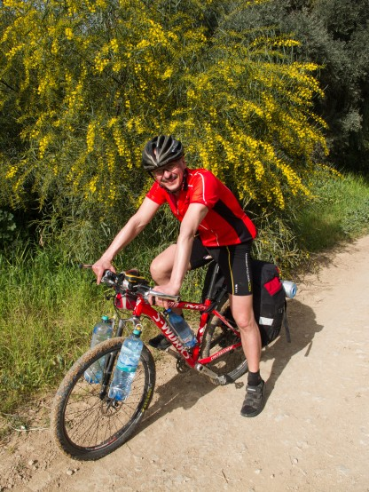
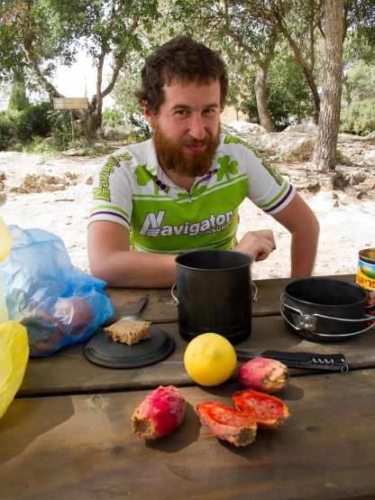
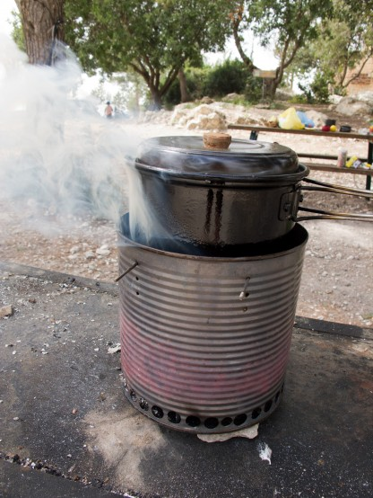

Трек всего похода
Израиль - удивительная страна. Такого разнообразия ландшафтов при столь малой площади еще нужно поискать и, скорее всего, даже не найти в мире. Сосновые парки в предгорьях, безлесные холмы, глубокие ущелья, пустыни выжженные солнцем, кратеры, мертвое море с его 400 метровыми обрывами. . . и все это можно проехать за один поход.
Израиль это не Европа и не Азия, он неповторим. Есть минусы: часть районов, например, вдоль побережья Средиземного моря очень густо населена, большую площадь занимают военные полигоны, зато есть множество национальных парков, а удивительные ландшафты пустынь и предгорий просто завораживают. Иными словами - если вы хотите составить действительно хороший маршрут по этой удивительной и красивейшей стране, то над ним нужно многого поработать.
Огромную помощь в составлении маршрута дают треки местных велосипедистов, которые подробнейшим образом описаны и иллюстрированы на сайте Игоря Скорубского http://is-israel.com Там же есть очень полезный FAQ составленный специально для велотуристов и еще масса нужной информации. Ресурс исключительно полезный. Спасибо Игорю за огромный труд.
При разработке плана нашего похода я использовал многие треки с этого сайта. Многие, так как большинство из них кольцевые и для составления линейного маршрута пришлось брать кусочки из разных треков. Несмотря на это я абсолютно не жалею о потраченном времени - маршрут получился хорошим и его можно смело рекомендовать для повторения.
Естественно, большая часть маршрута грунтовая, ведь именно здесь, вдали от шумных дорог настоящая красота. Первая часть пути проходит по паркам, расположенным в Иерусалимских предгорьях. Затем следует очень интересный район древних пещерных городов. Участок вдоль Хевронского нагорья перед Арадом менее интересен, зато после Арада мы спускаемся к Мертвому морю - настоящей жемчужине Израиля. Кстати в этом месте наш трек пересекается с маршрутом похода ВелоХанука. Таким образом, для большого похода, можно выбрать два варианта начала, как в этом описании и как в ВелоХануке.
После Мертвого моря у нас в меню три вида пустынь и два кратера (можно заскочить и в третий). На самом деле на кратерах маршрут нужно заканчивать, так как южнее идет достаточно скучный и плоский участок обширных полигонов и ехать придется либо по шоссе, либо совсем рядом с ним. После лунных пейзажей кратеров эта пустыня точно не произведет впечатления. Кроме того ехать в Эйлат смысла нет никакого, такую толпу народу, как там еще поискать нужно. Единственное действительно достойное посещения место в том районе - это парк Тимна, но уж очень он удален от кратеров.
Так что с высоты своего огромного опыта, аж двух походов по Израилю -) я рекомендую заканчивать в кратере Рамон, вернее в его окрестностях - там много красивых мест.
Пришло время рассказать, что же из этих замечательных планов у нас получилось осуществить.
Кстати, мы - это Александр Кунеш (ExE), то бишь я и Андрей Чесноков (Ache)

15 марта, пятница, шаббат
Андрей прилетел в Израиль на неделю раньше меня и уже успел немного покататься в направлении монастыря Сент Джордж, прочувствовать все радости велотуризма в ущелье Вади Кельт и даже поваляться на пляже в Эйн Геди на берегу Мертвого моря, но об этом он сам расскажет, если захочет, я прилетел ну очень дешевым рейсом Аэрофлота с пересадкой в Москве (повезло купить на него билеты)
Собрал велосипед в зале прилета (там, где получают багаж) еще до прохождения таможни. Зал просторный, народу мало (рекомендую делать именно так, в основном зале яблоку упасть негде). В туалете есть специальный аппарат с питьевой водой. Наполнил бутылки привезенные с собой. Поменял деньги в местном обменнике. Немного поплутал на выезде из аэропорта и спокойно доехал до леса Бен Шумен, где меня уже ждал на лавочке Андрей. Бен Шумен, хоть и называется лесом, больше похож на просторный парк с огромным количеством грунтовых дорожек, тропинок и мест для пикника. Местных велосипедистов он привлекает приятным рельефом и близостью к крупным городам. Наверное, по этой причине очень много треков проложено именно по этому лесу. Нас же интересовала в первую очередь возможность выспаться. Оказывается, в Бен Шумене отключили воду в кранах, вроде как за перерасход, но Андрей нашел "секретный" кран за забором, к которому тянулась уже протоптанная тропа. Набрали воды в душевой мешок и поехали к палатке, которую он предварительно спрятал от лишних глаз в молодых соснах. Подвесили душ, помылись.
Первый раз зажгли бурбулятор. Отлично работает на шишках. О бурбуляторе стоит рассказать отдельно. Идея устройства была рассказана Сергеем Радолицким. Он пользуется такими устройствами уже давно, а сам нашел описание на Скитальце. Мой вариант печки был изготовлен из банки резаных помидоров (вкуснятина) объемом 2.5 литра. Крышка аккуратно вырезана и из нее изготовлены колосники. Отверстия сделаны при помощи специального сверла по жести. Котелок ставится на велосипедные спицы, которые можно устанавливать на, разную высоту. Время изготовления устройства около часа при наличии материалов и инструментов.
У нас была с собой газовая горелка, но мы воспользовались ей всего один раз за поход и то от нечего делать. Оказалось, что даже в самой пустынной пустыне всегда можно найти немного сухих веток для столь экономичного и эффективного устройства. Чем мы его только не топили в течение похода: шишками, ветками шиты, колючками, виноградными ветками, эвкалиптом, гранатом, миндалем. . . короче, всем подряд.
Кстати, получается большая экономия веса, так как не надо везти с собой запас газа или бензина, да и само устройство весит очень мало. Внутрь удобно входит котелок и всякие мелочи, так что объем не теряется. Устройство показало себя замечательно!

Бурбулятор в работе
Дневной пробег 17, 6 км, набор высоты 185 метров.